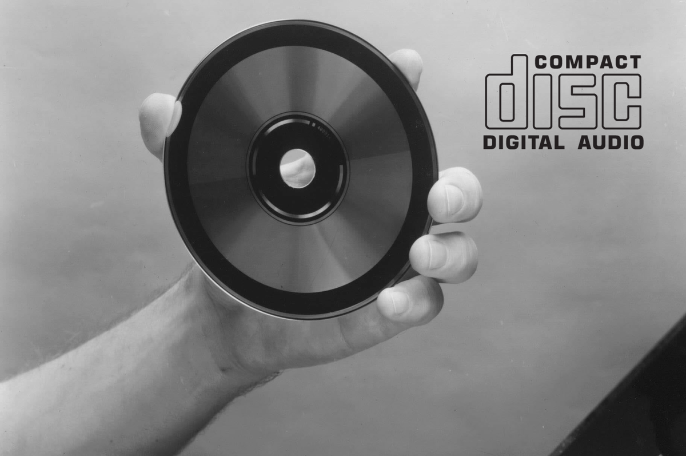
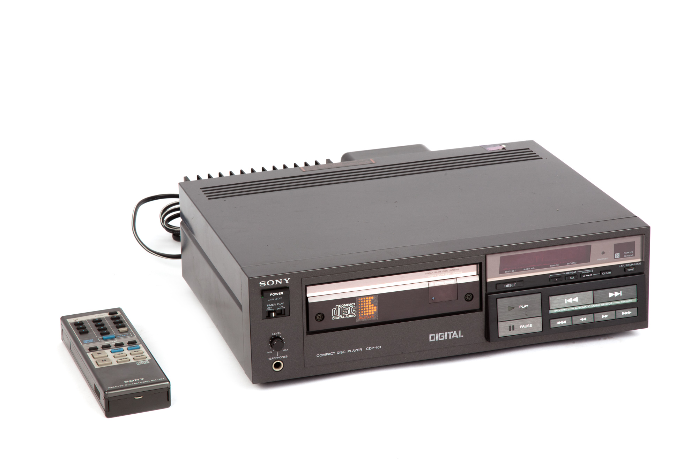
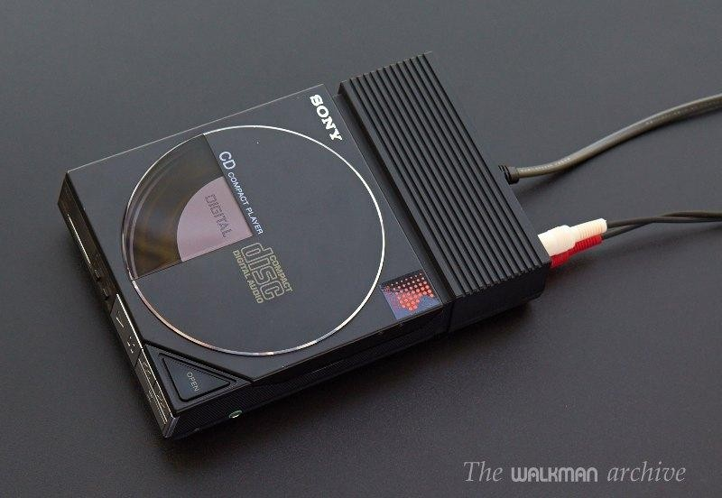

 O início da história dos CDs e tocadores de CDs remete a 1957, quando o italiano Antonio Rubbiani começou a fazer experimentos desta tecnologia, mas só depois de 12 anos a Philips começou a trabalhar no disco Audio Long Play (ALP) que usava a tecnologia laser e que rivalizava com os tradicionais discos de vinil analógicos. No entanto, somente em 1978, o projeto decolou para um tom mais sério quando a Philips lançou o Projeto de Compact Disc, como o objetivo de desenvolver um novo formato que eventualmente substituiria o equipamento de vídeo analógico e a Compact Cassette, que tinha este nome, pois desejava relembrar o sucesso das fitas cassettes.
 Entretanto, para o projeto se tornar um sucesso a Philips ainda tinha que melhorar seus métodos de gravação de áudio digital, entretanto a Philips carecia de experiência nestes métodos. Por outro lado, sua concorrente a Sony tinha mais de uma década de experiência no desenvolvimento e implementação dos melhores circuitos de áudio digital, todavia, não sabia como produzir os CDs, por isso em 1979 durante uma conferência ambas as empresas decidiram realizar um acordo de parceria para o desenvolvimento do CD. A partir desta parceria varias especificações, como a padronização do disco de 12 cm da Sony, em contrapartida, do 11.5 cm Philips, foram definidas em 1980 no Red Book que fez parte da coleção de especificações de CDs chamada de Rainbow Books.

E finalmente apos anos de desenvolvimento e amadurecimento da tecnologia, a Sony lançou no dia primeiro de outubro de 1982 o primeiro tocador de CD, o Sony CDP-101 CD Player, por 168.000 ienes e somente em novembro de 1984 a Sony lançou o primeiro tocador de CD portátil, o Discman D-50, por 49.800 ienes que inicialmente não era lucrativo, mas à medida que o produto ganhou popularidade, logo se tornou lucrativo e a Sony começou a criar um mercado de CD portátil.
Ao longo das próximas décadas os CDs e tocadores de CDs sofreram varias melhorias como novos formatos, CD-ROM, CD-R, e etc, e a introdução dos leitores de CDs em carros e computadores, assim como softwares para sua leitura, sendo o primeiro o lançado em 1987 pela Microsoft o Microsoft Bookshelf.